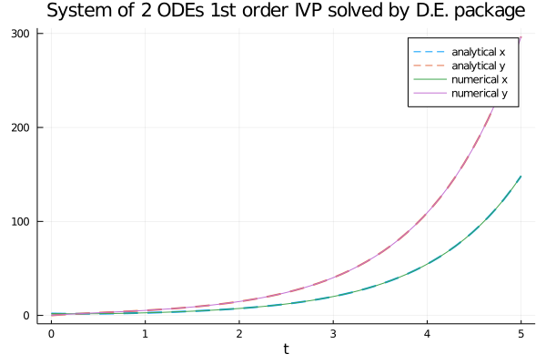
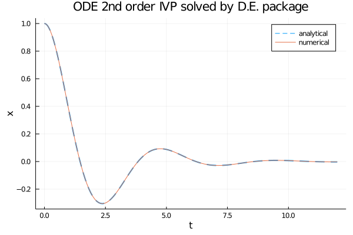

Ordinary differential equation solvers in Julia
This post shows the use of the ordinary differential equation (abbreviated ODE) solvers
implemented by the DifferentialEquations.jl native package of Julia ecosystem.
The resolution techniques shown here are numerical and not analytical techniques, as this site deals with computation.
Moreover this post is published under the category of neural networks: although not all the techniques shown here
use technologies of deep learning, its purpose is to be proactive to the topic on the relationship between neural networks and differential equations.
The post extends the Rosetta Stele started in the post Ordinary differential equation solvers in Python
as it presents the same three problems there (and there solved in Python) and shows how the same problems are solved here in Julia.
The three problems are an equation of the first order, a system of two equations of the first order and an equation of the second order each with its own initial conditions
(or Cauchy's conditions, abbreviated IVP for Initial Value Problem) and below their solutions.
Of each problem the analytical solution is also known and this allows to compare the quality of the numerical solutions obtained.
All the various code fragments described in this post require Julia version 1.5.3 and the following packages: DifferentialEquations, StaticArrays e Plots.
To get the code see paragraph Download the complete code at the end of this post.
Conventions
In this post the conventions used are as follows:
- $t$ is the independent variable
- $x$ is the unknown function
- $y$ is the second unknown function in the case of systems of two equations
- $x$ and $y$ are intended to be functions of $t$, so $x=x(t)$ and $y=y(t)$, but the use of this compact notation, in addition to having a greater readability at a mathematical level makes it easier to "translate" the equation into code
- $x'$ is the first derivative of x with respect to $t$ and of course $y'$ is the first derivative of y with respect to $t$
- $x''$ is the second derivative of x with respect to $t$ and of course $y''$ is the second derivative of y with respect to $t$
First order ODE with IVP
Let the following Cauchy problem be given:
$$ \begin{equation}
\begin{cases}
x'+x=\sin t + 3 \cos 2t
\\
x(0)=0
\end{cases}
\end{equation} $$
whose analytical solution is:
$$ x(t) = \frac{1}{2} \sin t − \frac{1}{2} \cos t + \frac{3}{5} \cos 2t + \frac{6}{5} \sin 2t − \frac{1}{10}e^{-t} $$
verifiable online via Wolfram Alpha.
Implementations of the following resolutions require the differential equation to be written explicitly in the form $x'=F(x,t)$
and then it becomes:
$$ x'=\sin t + 3 \cos 2t - x$$
Solution with DifferentialEquations.jl package
DifferentialEquations.jl uses the ODEProblem class
and the solve function
to numerically solve an ordinary first order differential equation with initial value.
The explicit form of the above equation in Julia with DifferentialEquations is implemented as follows:
ode_fn(x,p,t) = sin(t) + 3.0 * cos(2.0 * t) - xBelow is an example of Julia code that compares the analytical solution with the numerical one obtained by
ODEProblem and solve:
using DifferentialEquations
using Plots
ode_fn(x,p,t) = sin(t) + 3.0 * cos(2.0 * t) - x
an_sol(t) = (1.0/2.0) * sin(t) - (1.0/2.0) * cos(t) +
(3.0/5.0) * cos(2.0*t) + (6.0/5.0) * sin(2.0*t) -
(1.0/10.0) * exp(-t)
t_begin=0.0
t_end=10.0
tspan = (t_begin,t_end)
x_init=0.0
prob = ODEProblem(ode_fn, x_init, tspan)
num_sol = solve(prob, Tsit5(), reltol=1e-8, abstol=1e-8)
plot(num_sol.t, an_sol.(num_sol.t),
linewidth=2, ls=:dash,
title="ODE 1st order IVP solved by D.E. package",
xaxis="t", yaxis="x",
label="analytical",
legend=true)
plot!(num_sol,
linewidth=1,
label="numerical")

Comparison of the analytical solution with the numerical solution obtained by
ODEProblem and solve.System of two ODEs of first order with IVP
Let the following system of two ordinary differential equations with initial values be given:
$$ \begin{equation}
\begin{cases}
x' + x − y = 0
\\
y' - 4x + y = 0
\\
x(0)=2
\\
y(0)=0
\end{cases}
\end{equation} $$
whose analytical solution is:
$$ \begin{equation}
\begin{cases}
x(t) = e^t + e^{-3 t}
\\
y(t) = 2 e^t - 2 e^{-3 t}
\end{cases}
\end{equation} $$
verifiable online via Wolfram Alpha.
Implementations of the following resolutions require the differential equations to be written explicitly in the forms $x'=F_1(x,y,t)$ and $y'=F_2(x,y,t)$
and then the two equations become:
$$ \begin{equation}
\begin{cases}
x' = y - x
\\
y' = 4x - y
\end{cases}
\end{equation} $$
and in matrix form:
$$\left[\begin{matrix} x' \\ y' \end{matrix} \right] = \left[\begin{matrix} -1 & 1 \\ 4 & -1 \end{matrix} \right] \left[\begin{matrix} x \\ y \end{matrix} \right] $$
Solution with DifferentialEquations.jl package
DifferentialEquations.jl uses the ODEProblem clas
and the solve function
to numerically solve a system of ordinary first order differential equations of first order with initial values.
The explicit form of the above pair of equations in Julia with DifferentialEquations is implemented as follows:
function ode_fn(du,u,p,t)
x, y = u
du[1] = y - x
du[2] = 4.0 * x - y
endAlternatively, the system represented in matrix form in Julia with DifferentialEquations is implemented as follows:
A = @SMatrix [-1.0 1.0
4.0 -1.0]
function ode_fn(du,u,p,t)
du[[true, true]] = A * u
endNote that the second argument is an array of size two, which is as much as the number of unknown functions.
Below is an example of Julia code that compares the analytical solution of the system with the numerical one obtained by
ODEProblem and solve:
using StaticArrays
using DifferentialEquations
using Plots
A = @SMatrix [-1.0 1.0
4.0 -1.0]
function ode_fn(du,u,p,t)
du[[true, true]] = A * u
end
an_sol_x(t) = exp(t) + exp(-3.0 * t)
an_sol_y(t) = 2.0 * exp(t) - 2.0 * exp(-3.0 * t)
t_begin=0.0
t_end=5
tspan = (t_begin,t_end)
x_init=2.0
y_init=0.0
prob = ODEProblem(ode_fn, [x_init, y_init], tspan)
num_sol = solve(prob, Tsit5(), reltol=1e-8, abstol=1e-8)
x_num_sol = [u[1] for u in num_sol.u]
y_num_sol = [u[2] for u in num_sol.u]
plot(num_sol.t, an_sol_x.(num_sol.t),
linewidth=2, ls=:dash,
title="System of 2 ODEs 1st order IVP solved by D.E. package",
xaxis="t",
label="analytical x",
legend=true)
plot!(num_sol.t, an_sol_y.(num_sol.t),
linewidth=2, ls=:dash,
label="analytical y",
legend=true)
plot!(num_sol.t, x_num_sol,
linewidth=1,
label="numerical x")
plot!(num_sol.t, y_num_sol,
linewidth=1,
label="numerical y")
Here the link for the matrix form variation on GitHub.

Comparison of the analytical solution of the system with the numerical solution obtained by
ODEProblem and solve.Second order ODE with IVP
Let the following Cauchy problem be given:
$$ \begin{equation}
\begin{cases}
x'' + x' + 2x = 0
\\
x(0)=1
\\
x'(0)=0
\end{cases}
\end{equation} $$
whose analytical solution is:
$$ x(t) = e^{\frac{-t}{2}} (\cos {\sqrt{7} \frac{t}{2}} + \frac{\sin {\sqrt{7} \frac{t}{2}}}{\sqrt{7}}) $$
verifiable online via Wolfram Alpha.
Implementations of the following resolutions require the differential equation of second order
to be written explicitly in the form as a system of two equations of first order as follows:
$$ \begin{equation}
\begin{cases}
y=x'
\\
y'=F(x, y, t)
\end{cases}
\end{equation} $$
and then the initial Cauchy problem is written equivalently in the following way:
$$ \begin{equation}
\begin{cases}
y = x'
\\
y'= -y - 2x = 0
\\
x(0)=1
\\
y(0)=0
\end{cases}
\end{equation} $$
Solution with DifferentialEquations.jl package
DifferentialEquations.jl uses the SecondOrderODEProblem class
and the solve function
to numerically solve a second order differential equation with initial values.
The explicit form of the above equation in Julia with DifferentialEquations is implemented as follows:
function ode_fn(dx,x,p,t)
-dx -2.0 * x
endBelow is an example of Julia code that compares the analytical solution with the numerical one obtained by
SecondOrderODEProblem and solve:
using DifferentialEquations
using Plots
function ode_fn(dx,x,p,t)
-dx -2.0 * x
end
an_sol(t) = exp(-t/2.0) *
(cos(sqrt(7.0) * t / 2.0) + sin(sqrt(7.0) * t / 2.0)/sqrt(7.0))
t_begin=0.0
t_end=12.0
tspan = (t_begin,t_end)
x_init=1.0
dxdt_init=0.0
prob = SecondOrderODEProblem(ode_fn, dxdt_init, x_init, tspan)
num_sol = solve(prob, Tsit5(), reltol=1e-8, abstol=1e-8)
x_num_sol = [u[2] for u in num_sol.u]
plot(num_sol.t, an_sol.(num_sol.t),
linewidth=2, ls=:dash,
title="ODE 2nd order IVP solved by D.E. package",
xaxis="t", yaxis="x",
label="analytical",
legend=true)
plot!(num_sol.t, x_num_sol,
linewidth=1,
label="numerical")

Comparison of the analytical solution of the second order equation with the numerical solution obtained by
SecondOrderODEProblem and solve.Download of the complete code
The complete code is available at GitHub.
These materials are distributed under MIT license; feel free to use, share, fork and adapt these materials as you see fit.
Also please feel free to submit pull-requests and bug-reports to this GitHub repository or contact me on my social media channels available on the top right corner of this page.